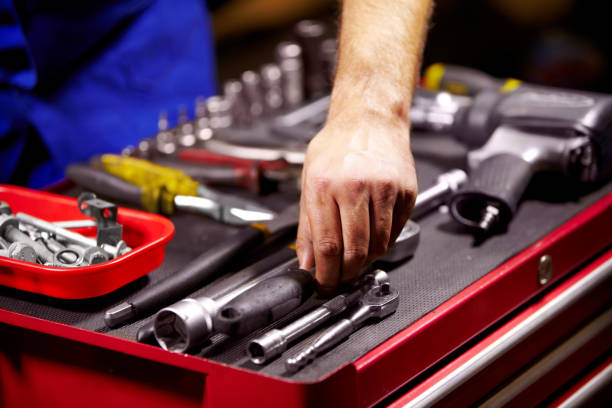
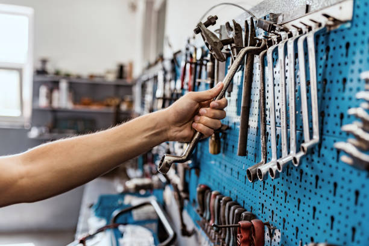
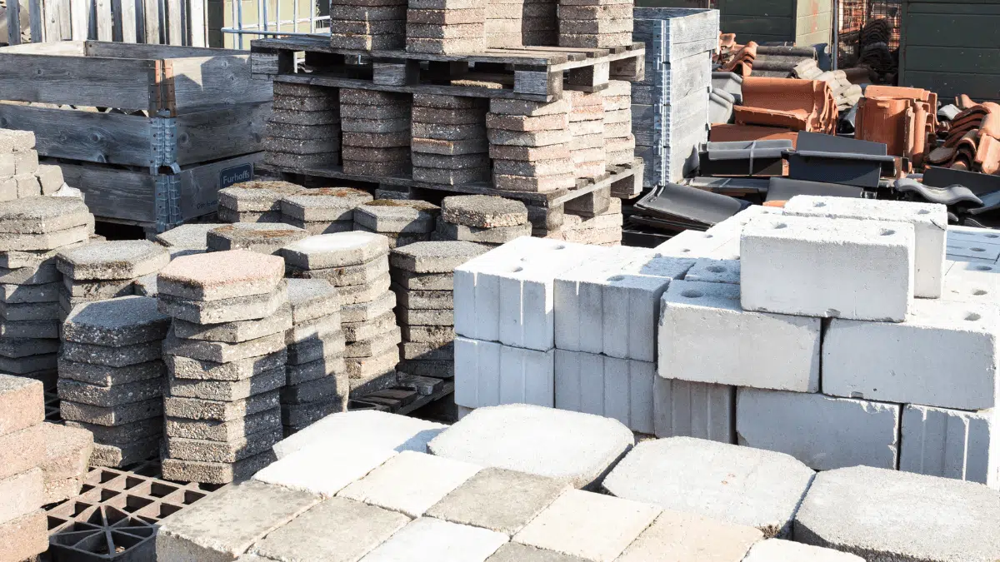
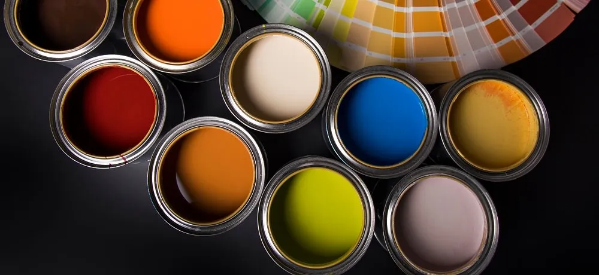

Sobre Nós
A Ferragem Ferradura é uma empresa dedicada a fornecer os melhores produtos e serviços de ferragem para profissionais e clientes. Com anos de experiência no mercado, nos comprometemos com a qualidade e satisfação do cliente.

A Ferragem Ferradura é uma empresa dedicada a fornecer os melhores produtos e serviços de ferragem para profissionais e clientes. Com anos de experiência no mercado, nos comprometemos com a qualidade e satisfação do cliente.

Ferramentas Manuais
Ampla variedade de ferramentas para atender às necessidades do cliente.

Materiais de Construção
Qualidade e durabilidade em todos os nossos materiais de construção.

Tintas & Acessórios
Uma ampla seleção de tintas e acessórios para atender às necessidades do cliente.
Oferecemos uma ampla gama de produtos de alta qualidade, com garantia e suporte técnico especializado. Nossos produtos são selecionados para atender às necessidades específicas de cada cliente, garantindo satisfação e confiança em cada compra. Mais do que vender produtos, entregamos as soluções ideais para o sucesso do seu projeto.